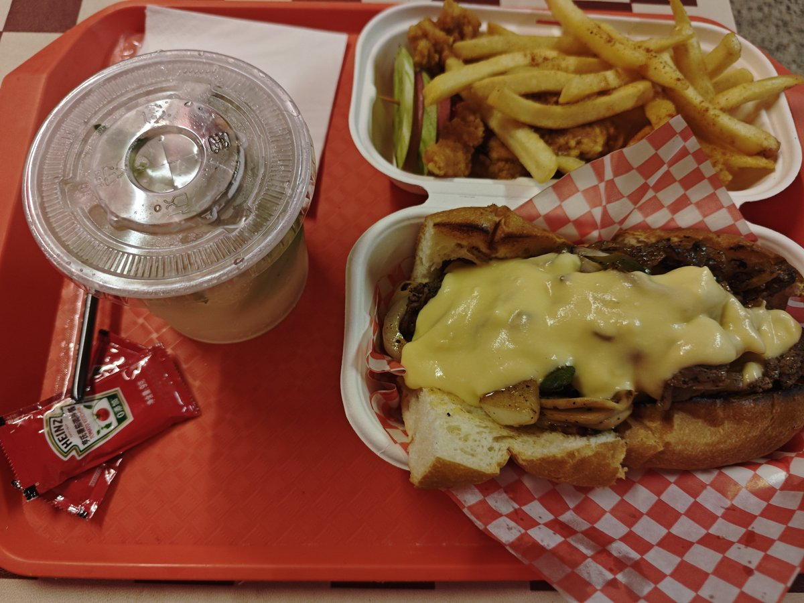
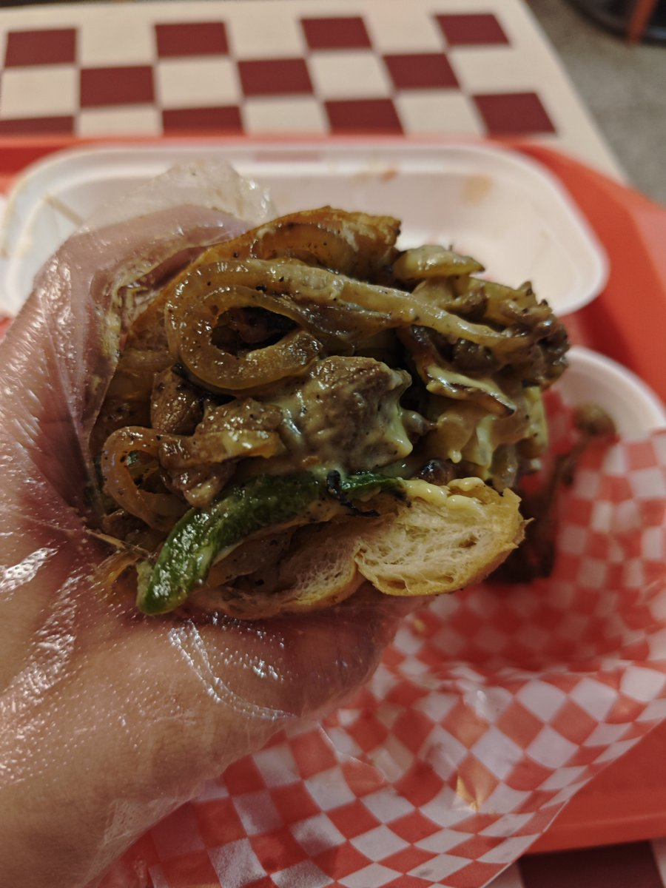

泪
@nekoinekoQwQ
@jom123ab 我好想吃，我好想吃，我好想吃


Jom
@jom123ab
探店齁鼻多
真假jom说
第四弹
广州 Gortmore · 经典费城牛肉三明治
一人 38.5
总结:这家是我自己发现的宝藏小店。薯条和小酥肉很美味，都是刚炸出来的。然后三明治的馅料非常多，吃到后面会有点腻。我觉得应该两个人吃。不过饮料有解腻。总的来说，非常有性价比
推荐菜品: 薯条，费城芝士牛肉三明治 https://t.co/oj04GLRe3v